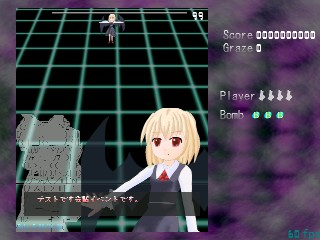

前バージョンのスクリプトを使っていた方へ(v0.01f以前との変更点)
※東方弾幕風v0.10a以降でもv0.01f以前のスクリプトは再生できます。
(以前のバージョンでの弾幕作製をすることも問題なくできます。)
v0.10aからサークルの知人YT氏にスクリプトエンジンを提供していただきました。
この変更にともないスクリプト仕様に変更が加わりました。
主な変更点の概要を以下にかきます。
詳細はそれぞれの項目にのせてあります。
サンプルを見れば大体どのように変わったかわかると思います。
最低限必要な部分は、↓です。
#東方弾幕風
#Title[]
#Text[]
#Image[]
#BackGround[]
#BGM[]
#PlayLevel[Normal]
#Player[REIMU,MARISA]
#ScriptVersion[2]
script_enemy_main
{
@Initialize
{
//敵出現時に一度だけ実行される部分
}
@MainLoop
{
//敵のライフが0になるまで、この部分が1フレームに1回実行
}
@DrawLoop
{
//描画ループ。1フレームに1回実行
}
@Finalize
{
//敵が消滅した瞬間に一度だけ実行される部分
}
@BackGround
{
//スペルカード時の背景部分
//無くてもよい
}
}
|
| Default | デフォルトの背景です。 |
| IceMountain | 凍った山のような背景です。 |
| User | 自由に指定できる背景です。ただし2D背景のみです。 書式はUser(画像ファイルパス,x方向の速度,y方向の速度)です。 例えば、 #BackGround[User(script\img\TestBack.png,2,2)] と指定すると、「script\img\TestBack.png」を背景画像とし、 x方向速度2、y方向速度2の斜めスクロール背景になります。 読みこむ画像の大きさに指定はありません。 仮にSTG画面より小さければ同じ画像を繰り返します。 ただし大きすぎる画像はビデオカードによっては読みこめません。 なるべく384×448が適当と思われます。 Userの後に何もかかなければ、背景は無し(黒)になります。 |
ステートメントとは命令のひと塊のことです。
制御文以外のステートメントの区切りには「;」(セミコロン)が必要です。
「;」は区切りですので、最後の文には不要ですが、書くことを推奨します。
let r = 0; SetCollisionA(GetX(),GetY(),32); //↑のようにステートメントの最後には //「;」が必須です。 |
予約語に指定されている単語は、変数名やサブルーチン名に使えません。
以下の単語が予約語です。
alternative、ascend、break、case、decend、else、function、
if、in、local、loop、real、return、let、others、
sub、task、times、while、yield
また、次の変数やサブルーチンが、組み込みで用意されています。
add、append、compare、concatenate、divide、false
index、length、multiply、not、negative、pi、power
predecessor、remainder、result、slice、
successor、subtract、true
| a ~ b | concatenate(a, b) |
| a + b | add(a, b) |
| a - b | subtract(a, b) |
| a * b | multiply(a, b) |
| a / b | divide(a, b) |
| a % b | remainder(a, b) |
| a ^ b | power(a, b) |
| a[b] | index(a, b), index!(a, b)←左辺値の時 |
| a[b..c] | slice(a,b,c) |
| ! a | not(a) |
| + a | a |
| - a | negative(a) |
| a++ | a = successor(a) |
| a-- | a = predcessor(a) |
| (|a|) | a = absolute(a) |
| true | 論理型の真を返す関数 |
| false | 論理型の偽を返す関数 |
| pi | πを返す |
変数とは数値等を入れておく箱のようなものです。
real, char, booleanまたそれらの配列が使えます。
realは数値です。
charは文字です。charの配列が文字列です。
booleanは真偽値です。
1, 1.0, 0.001, 100 …real型
true,false…boolean型
'a', 'b', 'あ' …char型(内部的にwchar_tで格納するため全角文字もOKです)
ただし、型を明示的に扱うことはできません。自動で判断されます。
変数宣言は「let」を用います。
「real」でも変数を宣言できますが実体は「let」と同じです。
let a; //aという変数を宣言 let a = 32; //aという変数を宣言(real型)して、32で初期化 let b = true; //bという変数を宣言(boolean型)して、trueで初期化 let str = "もじれつ";//strという変数を宣言(char型)して、"もじれつ"で初期化なお、C言語と違い並べて宣言することはできません。
let a,b; //×
変数を扱うとき、変数名1つにつき1つの値を割り当てられました。
ことろがこれでは10、20個など多くのデータを使うとき、
それだけの数の変数を準備する必要があり、宣言に手間がかかります。
そこで同じタイプの変数をまとめて扱うために配列というものが準備されています。
配列を使うときは次のように宣言します。
let a = [1,2,3];// …realの配列 let str = "文字列";// …charの配列
//配列の宣言
let a = [2, 3, 5];//配列aを[2,3,5]で初期化
//配列へのアクセス
//[x]で配列のx番目の値にアクセスします
//添え字は0からです。
let b = a[0];//bは2になります
a[0] = 9;//配列aは[9, 3, 5]になります。
let str = "あいうえお"[2];//strは'う'になります。
//配列の結合
//「~」演算子で配列の結合を行えます
let c = [32, 64, 96];
a = a ~ c;//aは[9, 3, 5, 32, 64, 96]になります。
//配列のテーブルをループで作成する場合
//配列を結合しながらテーブルを作成できます
let d = [];//dは配列
ascent(i in 0..100)
{//配列dを[0 1 2 … 98 99]で初期化
d = d ~ [i];//配列の結合
i++;
}
//配列のスライシング
//配列に対して[x..y]のようにかくと、
//要素のx番目からy番目を切り出します
//ただしy番目の要素は含みません
let e = [0, 1, 2, 3, 4];
let f = e[2..4];//fは[2,3]になります
//配列を三項演算子の代わりに使う
let g = [7, -5][b == 10];//bが10ならgは-5になります
//配列のサイズを取得する
let h = [1, 2, 3, 4, 5];
let i = length(h);//iは5になります
//配列要素の削除
let j = [10, 20, 30, 40];
j = erase(j, 0);//最初の要素を削除します
//j = [20, 30, 40]になります
|
配列のコンストラクタは定数に限りません。
if(a == 0){ b = c }else if(a == 1){ b = d }のような記述は、
aが0と1しか取らない場合に限り、b = [c, d][a]のように書けます。
突然"["を始めた時は配列の作成で、何かの後に続けた時は要素へのアクセスです。
JavaScript等は"+"演算子で結合も行いますが、
#ScriptVersion[2]では配列同士を足し算すると、
[1, 2, 3] + [4, 5, 6] == [5, 7, 9]のような演算になります。
現在は"+"と"-"(addとsubtract)に限った機能ですが、
そのうち他の演算子にも拡張されるかもです。
全ての中括弧(「{...}」)はローカルスコープを導入します。
全ての中括弧において、中で宣言したものは外では使えません。
純粋にローカルスコープ「のみ」を利用したい場合にlocal文を用います。
いわば、何もしない制御文です。
(このスクリプトでは、C言語のように、突然中括弧を開始することはできません)
同名の変数を宣言しない限り、親の変数は全て触れます。
script_enemy_main
{
//ここで宣言した変数は「script_enemy_main」全域で有効
let a;//変数aは全ての「@〜」内で有効」
@Initialize
{
a = 2;//変数aにはアクセスできる
let x = 1;//ここで宣言すると@Initializeの最後まで有効
local
{
//ここで宣言したxはlocal文最後の「}」まで有効
let x = 3;
//ここではxは3
a = x;//aには3が入る
}
//ここではxは1
let c = x;//cには1が入る
}
@MainLoop
{
a = 5;//変数aにはアクセスできる
//ここでは変数xにアクセスできない
}
@DrawLoop
{
//while、loop、ifの「{...}」も同様にローカルスコープが導入される
let d = 10;
loop(5)
{
let e = d;//dにはアクセス可能
}
//ここではeにアクセスできない
}
@Finalize
{
}
}
|
変数に値を代入したり、式を記述するときには下記の記号が使えます。
なお「=」は比較ではなく、代入を表します。例えば
a = 2;
は「aは2に等しい」のではなく、「aに2を代入する」という意味です。
let a; let b; a = 32 + 2; //「+」で和を表します。aは34になります。 b = a - 30; //「-」で差を表します。bは4になります。 a = 2 * 3; //「*」で積を表します。aは6になります。 b = 72 / a; //「/」で商を表します。bは12になります。 a = 32 % 3; //「%」は商の余りです。aに32を3で割った余りを代入という意味になります。aは2になります。 b = a ^ 4; //「^」は累乗です。bにaの4乗を代入という意味になります。bは16になります。 b = 3 ^ 3 ^ 3; //「^」だけ、右結合の演算子です。3^3^3は3^(3^3)と解釈され729ではなく19683になります /* 演算子の優先順位は、 「( ... )」 > 「^」「[]」>「!」「+」「-」 (単項) >「*」「/」「%」 > 「~」「+」 「-」 (二項) です。 */ let c = ((b * 3 - 2)%(a + 2 ^ 2)) / 2;//cは2になります。 //以下のような書き方もできます a++;//a = a + 1と同じ a+=5;//a = a + 5と同じ |
比較式は、「==」 「!=」 「>」 「>=」 「<」 「<=」が使えます。
ただし、異なる型同士を比較した場合エラーになります。
論理式は、「!」 「&&」 「||」が使えます。
「&&」と「||」はショートサーキット評価がなされます。
左辺だけで結果が確定した場合右辺は計算されません。
たとえば、0 == 1 && func(x)とすると、
0 == 1だけで真偽の偽なのは確定しますのでfuncは呼ばれません。
「!」は否定です。真なら偽、偽なら真を返します。
与えられた条件によって処理を変えたいときに使います。
/*
基本的な条件式の記述
「a == b」 ：aがbと等しい
「a > b」 ：aがbより大きい
「a >= b」 ：aがb以上
「a < b」 ：aがbより小さい
「a <= b」 ：aがb以下
*/
//ifの使い方
if(a == 2 + b * 5)
{
//aが「2 + b * 5」であれば実行される部分
}
//「&&」は論理積を表します。
if(a > 50 && b < 30)
{
//aが50より大きく、bが30より小さいときに実行される
}
//「||」は論理和を表します。
if(c >= 2 || b <= 30)
{
//cが2以上またはbが30以下のときに実行される
}
//else は「でなければ」といったような意味です
if(c == 4)
{
//cが4であれば実行される
}
else if(d == 6)
{
//cが4ではなく、dが6の時実行される
}
//alternativeの使い方
//C言語のswitchに似た分岐構文です
alternative(a)
case(0)
{
//aが0の時に実行される
}
case(3, 5)
{
//aが3もしくは5の時に実行される
}
others
{
//それ以外の時実行される
}
//C言語と違いステートメントが1つでも「{」「}」の省略はできません。
//必ず「{」「}」で囲む必要があります。
|
ループ「loop、times、while、ascent、descent」
同じ処理を繰り返したいときに使います。
ループは予約語loopで構成し、while, times, ascent, descentなどのループ条件を付加できます。
構文は
loop(n){ }
times(n) loop{ }
while(条件) loop{ }
ascent(let i in x..y) loop{ }
descent(let i in x..y) loop{ }
です。times、while、ascent、descentのloopは省略できます。
//loopは、()の中に繰り返したい回数を記述します。
loop(10)
{
//10回繰り返します。
}
//回数を省略すると無限ループします。
//必ずbreak、returnで抜けてください。
let a = 5;
loop
{
if(a == 5)
{
break;
}
a++;
}
//timesも()の中に繰り返したい回数を記述します。
times(5)
{
//5回繰り返します。
}
//whileは与えられた条件が真の間、範囲を繰り返し実行します。
let a = 0;
while(a < 360)
{//aが360より小さい間繰り返す。
a++;
};
//while中が無限ループになると
//アプリケーションが動かなくなるので注意してください。
while(true)
{
//常に条件が真になり、無限ループになるので危険
}
//インデックス付きのループもつくれます
//ascent(let i in x..y) loop{}
//descent(let i in x..y) loop{}
//i が x から y まで変化します。ただし y は含みません。
//ascentは値が増加、descentは減少します。
ascent( let a in 0..10) loop
{
//array[a] = xxx;配列にアクセスしたりするとき便利です
}
//ascent、descentともにlet とloopは省略可能です。
descent(a in 0..10)
{
}
|
breakは最も内側のwhile、loopから脱出します。
returnで最も内側のsub, function, taskから脱出します。
functionの中から以外では、値を伴うreturnはエラーになります。
let a = 0;
while(true)
{//aが5になったらループを抜ける
if(a==5){break;};
a++;
}
|
特定の動作をまとめるときに使います。
引数などは取れません。
BASICで言うGOSUB〜RETURNに相当します。
他の制御文と同様に、必要なだけ入れ子にできます。
sub xxx(xxxは任意の文字)でサブルーチン部分を記述します。
//サブルーチンのかき方例
sub Shot5Way
{//5WAYサブルーチン
SetShotDirectionType(PLAYER);
let angle=-30;
while(angle<=30)
{//(angle=-30, -15, 0, 15, 30)
CreateShot01(GetX(),GetY(),3,angle,BLUE11,30);
angle+=15;
}
}
//サブルーチン呼び出し例
@MainLoop()
{
if(timer == 0)
{
Shot5Way;//5WAYサブルーチン呼び出し
}
}
|
ユーザー定義関数を導入します。
subとよく似ていますが、違いは、引数によって値を渡し、返値によって結果を返せることです。
返り値は「retuen 値;」で記述します。
もしくは「result」という名前の変数に特別な代入してください。
「result」変数は予め用意されていますので宣言の必要はありません。
やはり、他の制御文と同様に、必要なだけ入れ子にできます。
引数の無い関数を呼ぶ時は、括弧は付けても付けなくてもよいです。
仮引数のletは省略可能です。
//関数のかき方例
function nWayToPlayer(let nWayNum,let nWayInterval,let nWaySpeed,let nWayGraphic)
{//自機方向へのnWay関数
//nWayNum：nWay
//nWayInterval：弾の間隔(弾間隔ってIntervalで本当にいいのだろうか…)
//nWaySpeed：弾の速度
//nWayGraphic：弾の画像
SetShotDirectionType(PLAYER);
let sAngle=-nWayInterval*int(nWayNum/2);
let eAngle=nWayInterval*int(nWayNum/2);
while(sAngle<=eAngle)
{
CreateShot01(GetX(),GetY(),nWaySpeed,sAngle,nWayGraphic,30);
sAngle+=nWayInterval;
}
}
//関数の呼び出し例
@MainLoop()
{
if(timer == 0)
{//関数呼び出し
//5Way、弾間隔10°、弾速5、画像BLUE11
nWayToPlayer(5,10,5,BLUE11);
}
}
|
//返り値の例
function Double(let x)
{
return x * 2;
}
//〜〜〜
a = Double(10); //a = 20
|
functionに似ていますが、途中で戻ってくることができます。
複数のマイクロスレッドを並列して存在させ、順次yieldによって切り替える事で、
あたかも同時に複数のスクリプトが走っているような記述ができます。
task X(let A)
{
//(1)起動された直後
yield; //一旦終わる
//(3)復帰した
//最後に到達すると完全に終了
}
X("ひきすう"); //起動
//(2)Xの中のyieldにより帰ってきた
yield;//現在まだ終わっていないマイクロスレッドの続きを実行
//(4)Xが終わったので帰ってきた
|
コメントアウト部分のスクリプトは、実行時に無視されます。
「//」は行末までコメントアウト、
また、「/*」〜「*/」では、その間がコメントアウトされます。
//←行末までコメントアウト /* この部分は実行されない */ |
ファイル取り込み「#include_script、#include_function」
ファイルを読みこんで置換する機能です。
ただ、とりあえず付けた的機能で、現状では制限が強いです。
内部でやっていることは単なる置換だけなのでエラー行数がずれます。
行数がずれても問題無いようにテキストの最後に追加することをすすめます。
「#include_script」は「script_enemy、script_shot、script_event」等がかかれているファイルを読みこみます。
全ての「script_enemy_main、script_enemy」等の外側に記述してください。
「#include_function」は「sub、function、task」がかかれているファイルを読みこみます。
「script_enemy、script_shot、script_event」等の内側に記述してください。
「#include_script」「#include_function」はどちらとも構文解析前に実行されるので、
ファイルパスに変数は使えません。
//#include_scriptの例
script_enemy_main
{
//〜〜〜
}
//この部分に「script\test.txt」の内容をそのまま持ってくる
//なるべくファイルの最後にかくことをすすめます
#include_script"script\test.txt"
|
//#include_fuctionの例
script_enemy_main
{
@Initialize{}
@MainLoop{}
@DrawLoop{}
@Finalize{}
//この部分に「.\funciton.txt」の内容をそのまま持ってくる
//「.\」でそのファイルのディレクトリからのパスになります
//なるべくブロックの最後にかくことをすすめます
#include_function".\function.txt"
}
|
RED、GREEN、BLUE、YELLOW、PURPLE、AQUA、ORANGE、WHITEを準備しています。
CreateShot等の関数に用います。
レーザーの画像にも指定できます。
↓にREDの例だけ示します。
| RED01 | |
| RED02 | |
| RED03 | |
| RED04 | |
| RED05 | |
| RED11 | RED12 |
| RED21 | |
| RED22 | |
| RED23 | |
| RED31 | |
| RED32 |
弾幕風で定義されている弾画像だけでは、足りない場合も有ると思います。
そんなときは、LoadUserShotData関数で弾画像の追加を行えます。
追加した弾画像の重さは、組み込みの弾画像と同じです。
アニメーションする弾も定義することができます。
LoadUserShotDataで読み込むためのファイルの書き方を以下に示します。
#UserShotData
ShotImage = ".\UserShot.png"
//ShotDataに弾の定義を書きます
ShotData
{
id = 1 //ID
rect = (0,0,32,32) //描画元矩形
render = ALPHA //描画方法
delay_color = (255,128,255) //遅延時間時の光の色
angular_velocity = rand(-5,5) //画像の回転速度
}
//改行無し1行で記述することもできます
ShotData{id = 2 rect = (0,0,16,16)}
//アニメーションする弾
ShotData
{
id = 3
render = ADD
delay_color = (255,128,255)
AnimationData
{
//16フレーム(0,0,12,12)
//→8フレーム(12,0,24,12)
//→24フレーム(12,12,24,24)
//→最初に戻る
animation_data = (16,0,0,12,12)
animation_data = (8,12,0,24,12)
animation_data = (24,12,12,24,24)
}
}
|
| id | CraateShot等に渡すIDです。"RED01"等の代わりに渡します。 1-255までの値を使います。 |
| rect | 描画もとの矩形を設定します(左、上、右、下)。 アニメーションがある場合は無視されます。 |
| render | ALPHA：通常描画。ADD：加算合成描画。指定しなければALPHAになります。 |
| delay_color | 遅延時間時の光の色です。指定しなければ(128,128,128)になります。 |
| angular_velocity | 画像が回転する速度を指定します。 ランダムを指定したい場合はrandを用います。 指定しなければ0になります。 レーザーの場合は無視されます。 |
| AnimationData | アニメーションする弾を定義します。 アニメーションはanimation_dataで定義していきます。 animation_data=(継続フレーム, 描画元左, 描画元上, 描画元右, 描画元下) になっています。 連続してanimation_dataを記述することで次々描画元矩形が変化するようにできます。 |
//追加した画像で弾を作成するときは、 //RED01等を渡す代わりに、定義した値を直に渡します。 CreateShot01(GetX(), GetY(), 3, 0, RED01, 30);//組み込みの弾 CreateShot01(GetX(), GetY(), 3, 0, 1, 30);//追加した弾 |
スクリプトで動作させる弾です。
組み込み関数で対処できない軌道の弾を記述できます。
画面端で反射する弾、画面逆端から出てくる弾、ホーミング弾、
当たり判定のないコウモリ等のオブジェクトにも使えます。
組み込まれてない画像の弾も可能です
(組み込まれていない画像の弾を表示すると、内部で一括描画できないので重くなります)。
ただし、スクリプト動作なので組み込みの弾に比べて重いという欠点があります。
また、画面外に出たら弾が消える等、
自動的に行われていた部分も自分で記述する必要があります。
弾として動かすより、敵と独立に動く魔法陣等に使ったほうがいいかもしれません。
(弾を出しつづける魔法陣の設置等)
弾動作スクリプト内の変数は弾それぞれ独自に持たれています。
弾同士の変数を参照することはできません。
また、敵変数とも独立なので、敵と弾が相互に変数を参照することはできません。
関数も同様です。
弾スクリプトは文字列として登録されています。
呼び出しは「CreateShotFromScript」の引数に登録してある文字列を指定します。
以下にホーミング弾の作成例を示します。
組み込みの弾ではホーミングは困難ですが、スクリプトなら楽に実装できます。
script_shot Homing
{//ホーミング弾を定義
let count=0;
let angle=GetAngle();//進行角度取得
@Initialize
{
SetDefault(BLUE12);//組み込みの弾をセット
}
@MainLoop
{
let toAngle=GetAngleToPlayer();//自機方向の角度取得
//dAngle：1フレームあたりの角度変化量限界
//dAngleを増加させるほどホーミング性能が増す
let dAngle=2;
let ret=toAngle-angle;
if((ret>0&&ret<=180)||(ret<0&&ret<=-180)){angle+=dAngle;}
else if((ret>0&&ret>180)||(ret<0&&ret>-180)){angle-=dAngle;}
if(angle>=360){angle-=360;}//360°以上なら0〜360内に補正
if(angle<0){angle+=360;}//0°未満なら0〜360内に補正
SetAngle(angle);
SetCollisionBDefault();//組み込みの弾の当たり判定を登録
if(count==300){End();}//300フレームで消滅
count++;
}
@DrawLoop
{
DrawGraphicDefault();//組み込みの弾を描画
}
@Finalize
{
}
}
//弾スクリプト呼び出し例
script_enemy_main
{
@Initialize
{
//〜〜〜
}
@MainLoop
{
//〜〜〜
CreateShotFromScript("Homing",GetX(),GetY(),3,GetAngleToPlayer(),60,0);
//〜〜〜
}
@DrawLoop
{
//〜〜〜
}
@Finalize
{
//〜〜〜
}
}
|
複数の敵を出現させる時の手順です。
ほとんどは弾スクリプトと同じです。
弾スクリプトは「script_shot 名前」で記述しますが、
敵のスクリプトは「script_enemy 名前」で記述します。
呼び出しは「CreateEnemyFromScript」を用います。
弾スクリプトと異なるのは呼び出せる組み込み関数が異なる点と、
弾幕風内部での扱いが「弾」ではなく「敵」になることくらいです。
ライフを設定できるので破壊もできます。
ライフが設定されなかったら出現と同時に消滅します。
東方弾幕風は弾幕シミュレータですが、会話イベントも実装可能です。
下図のようになります。

イベントスクリプトは「script_event 名前」で記述します。
呼び出しは「CreateEventFromScript」関数です。
イベントスクリプトは他の部分と違い特殊です。
イベントスクリプトには「@DrawLoop」は存在しません。
従って共通の描画用関数を呼び出すことはできません。
呼び出せるのは、ほぼ会話イベント専用関数のみです。
「@MainLoop」の最後に「End()」も必須です。
会話イベントが呼び出されると全ての敵弾が消滅します。
また自機の当たり判定は消滅します。
会話イベント中も敵は動作するので
「OnEvent」関数や「GetEventStep」関数で敵の動きを制御する必要があります。
イベント専用のファイルをつくった方がいいかもしれません。
↓が例です。
//イベント
script_event EventTest
{
@Initialize
{
LoadGraphic("script\img\Event_Reimu01.png");
LoadGraphic("script\img\Event_Rumia01.png");
}
@MainLoop
{
SetChar(LEFT,"script\img\Event_Reimu01.png");//左側キャラクタの画像を設定
SetGraphicRect(LEFT,1,1,255,255);//左側キャラクタの表示画像矩形を設定
MoveChar(LEFT,FRONT);//左側のキャラクタを前に移動
Wait(30);//30フレーム待つ
TextOut("\c[BLUE]全く。\n
こんなにロマンチックな夜は初めてだわ。\n
お化けもこんなに出てくるわけよね。\n
さて、そこの暗いの。");//文字描画
SetChar(RIGHT,"script\img\Event_Rumia01.png");//右側キャラクタの画像を設定
SetGraphicRect(RIGHT,1,1,255,255);
MoveChar(LEFT,BACK);//左側のキャラクタを後に移動
MoveChar(RIGHT,FRONT);//右側のキャラクタを前に移動
Wait(30);//30フレーム待つ
TextOut("\c[RED]何か？");//文字描画
MoveChar(LEFT,FRONT);//左側のキャラクタを前に移動
MoveChar(RIGHT,BACK);//右側のキャラクタを後に移動
TextOut("\c[BLUE]あてずっぽうで言ったのに当たったわ…");//文字描画
End();//最後にEnd()は必須
}
@Finalize
{
DeleteGraphic("script\img\Event_Reimu01.png");
DeleteGraphic("script\img\Event_Rumia01.png");
}
}
//呼び出し例
script_enemy_main
{
@Initialize()
{
//〜〜〜
CreateEventFromScript("EventTest");//EventTestイベントを呼び出す
//〜〜〜
}
@MainLoop()
{
if(OnEvent()==true){break;};//イベント中は敵の動きを停止する
//〜〜〜
}
@DrawLoop()
{
//〜〜〜
}
@Finalize()
{
//〜〜〜
}
}
|
スクリプトを連続再生させることもできます。
連続再生で、雰囲気をさらに東方本家のボスに近づかせることができます。
連続再生はタイトル画面の「Plural」から行うことができます。
以下の例で連続再生用ファイルの説明をします。
#東方弾幕風[Plural] #Title[Exルーミアスクリプト連続再生] #Text[Exルーミアスペルカード×５] #Image[.\img\ExRumia(星符「ミッドナイトレヴァリエ」).png] #BackGround[Default] #BGM[] #ScriptVersion[2] #ScriptPathData #ScriptPath[.\ExRumia01.txt] #ScriptPath[.\ExRumiaSpell01.txt] #ScriptPath[.\ExRumiaSpell02.txt] #ScriptNextStep #ScriptPath[.\ExRumia02.txt] #ScriptPath[.\ExRumiaSpell03.txt] #ScriptPath[.\ExRumiaSpell05.txt] #ScriptNextStep #ScriptPath[.\ExRumiaSpell04.txt] #EndScriptPathData |
弾幕風はステージの作製も可能です(本来は弾幕シミュレータですが要望があったので実装しました)。
ただし、C言語似のスクリプトなので多少記述が面倒かもしれません。
敵の出現などはステージスクリプト専用の関数を用います。
下の例ではマイクロスレッドを用いてステージを制御しています。
マイクロスレッドを使うのは、「@MainLoop」内でif文を使ってタイミングを計る必要が無いからです
(@MainLoop内でif(frame==60){...}みたいなかきかたをしていたら面倒です)。
ステージスクリプトでもCreateShot系の関数を呼ぶことはできます。
#東方弾幕風[Stage]
#Title[ExRumiaステージ]
#Text[ExRumiaステージ]
#Image[.\img\ExRumia(星符「ミッドナイトレヴァリエ」).png]
#BackGround[Default]
#ScriptVersion[2]
script_stage_main
{
let cx=GetCenterX();//STGシーンの中心x座標を取得
let imgEnemy=GetCurrentScriptDirectory~"img\Enemy.png";//Enemy.pngへのパス
task StageTask
{//ステージタスク
function Wait(let frame)
{//待機関数
loop(frame){yield};
}
function WaitForZeroEnemy()
{//敵数が0になるまで待機する関数
while(GetEnemyNum() != 0){yield;}
}
Wait(60);//60フレーム待つ
//敵をファイルから読みこんで出現
CreateEnemyFromFile(GetCurrentScriptDirectory~"Enemy01.txt",cx,0,0,0,0);
WaitForZeroEnemy();//敵が消えるまで停止
Wait(240);//240フレーム待つ
//ExRumia出現
CreateEnemyBossFromFile(GetCurrentScriptDirectory~"ExRumia.txt",cx,0,0,0,0);
WaitForZeroEnemy();//敵が消えるまで停止
Wait(60);//60フレーム待つ
ClearStage();//ステージクリア
}
@Initialize()
{
LoadGraphic(imgEnemy);//敵画像読みこみ
StageTask();//ステージタスク起動
}
@MainLoop()
{
yield;//毎フレームタスク復帰
}
@Finalize()
{
DeleteGraphic(imgEnemy);
}
/*
@BackGround()
{
//@BackGround{...}が存在すると
//#BackGround[...]より優先されて描画される
//なくても問題ありません
}
*/
/*
@DrawBottomObject
{
//敵や弾以外で背景のすぐ上にオブジェクトを表示する
//なくても問題ありません
}
*/
/*
@DrawTopObject
{
//敵や弾以外で最も全面にオブジェクトを表示する
//なくても問題ありません
}
*/
}
|
自機は霊夢と魔理沙が組み込まれていますが、
それ以外のキャラクタで遊びたくなるかもしれません。
そんな時は、自機を作成してください。
敵スクリプト側の「#Player」にプレイヤースクリプトへのパスを記述することで
遊べる自機の種類を変更できます。
(全てのスクリプトで、追加した自機を選択できるようにしないのは、
会話イベントつきのスクリプトなどで困るからです。)
本体に自機スクリプトサンプル「Rumia.txt」を付属させています。
#東方弾幕風[Player] //自機スクリプトであることを示します
#ScriptVersion[2] //スクリプトバージョン2が必須です
#Menu[ルーミア] //自機選択画面で表示されるメニューです
#Text[プレイヤーサンプルです。闇符]//自機選択画面で表示されるテキストです
#Image[.\RumiaSelect.png]//自機選択画面で表示される画像ファイルへのパスです
#ReplayName[Rumia]//リプレイ選択時に表示される文字です。8文字以内です。
script_player_main
{
@Initialize
{
//自機の初期化時に一回だけ呼び出される部分です
}
@MainLoop
{
//毎フレーム実行される部分です
}
@Missed
{
//自機撃墜時に"@MainLoop"の代わりに呼ばれます
//MainLoopと同じでよければ
//@Missed{MainLoop}
//とかけば、@MainLoopと同じになります。
//ただし、撃墜時に動けたり弾が撃てると変なので
//OnMissed関数で撃墜中かを判断してください
}
@SpellCard
{
//スペルカードを発動した瞬間に呼ばれる部分です
//ここでGetKeyStateで移動状態を判断したりして
//呼び出すスペルを選びます
}
@DrawLoop
{
//描画ループ。スキップされない限り1フレームに1回実行されます
}
@Finalize
{
//スクリプト終了時に一回だけ呼び出される部分です
}
}
script_spell Demarcation
{
@Initialize
{
//スペルカードの初期化時に一回だけ呼び出される部分です
}
@MainLoop
{
//スペルカード発動時に毎フレーム呼び出される部分です
}
@Finalize
{
//スペルカード終了時に一回だけ呼び出される部分です
}
}
|
弾幕風はコンティニューを何度でも行うことができますし、
スクリプトファイルの改変も自由です。
ただこれでは、クリアするという楽しみが消えてしまうかもしれません。
東方本家でもクリア時の達成感は相当なものだったと思います。
はやく次の段階の弾幕を見たいと思ったこともあるでしょう。
そこで、そんな楽しみを少しでも加える方法をかいておきます。
ただし、連続再生必須です。
まず、スクリプトでExpert関数を呼びましょう。
この関数は、コンティニュー、デバッグキーの使用を不可にします。
続いて、全てのスクリプトを連続再生専用にするために、「#東方弾幕風」を消します。
加えて、弾幕風用アーカイバで、配布ファイルを圧縮付きで1つにまとめましょう。
これでスクリプトの改変が行いづらくなります。